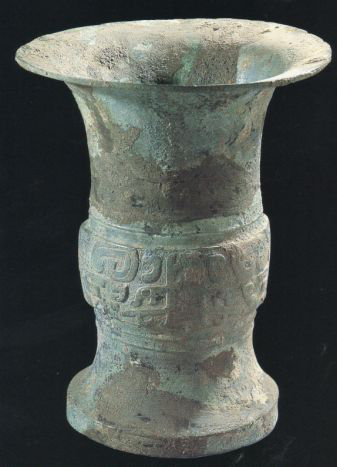
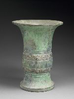
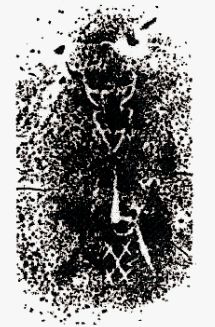
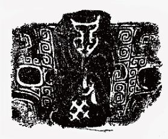
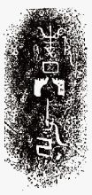
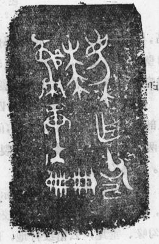
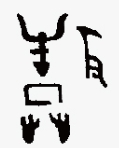
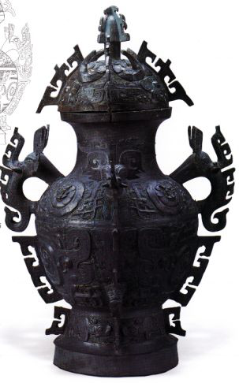

参观完《秦蜀之路青铜文明特展》后，相信大家已经眼花缭乱了，好多小伙伴说：“这个纹饰好像和刚才的一样”、“这两个东西为啥子长得一样”、“啊这个叫啥来着，叫……”，那今天我们来玩个游戏，看图找不同，考考大家的眼力。
第一组

彭县竹瓦街窖藏出土兽面纹铜尊
（四川博物院藏）

宝鸡竹园沟墓地出土凤鸟纹铜尊
（宝鸡青铜器博物院藏）
第二组

彭县竹瓦街窖藏出土“覃父癸”铜觯铭文拓片

宝鸡竹园沟墓地出土“覃父癸”铜爵铭文拓片
第三组

彭县竹瓦街窖藏出土“牧正父己”铜觯铭文拓片

宝鸡竹园沟7号墓出土“父己”铜觯铭文拓片

陇县韦家庄周墓出土“牧正”铜尊铭文
通过上面的这些器物和铭文拓片，大家应该发现彭县竹瓦街窖藏与关中地区尤其是宝鸡 弓鱼 国墓地出土青铜器在器形和铭文上有很多相似之处。其实，蜀地很早就与中原有密切联系，中原出土殷商甲骨卜辞中，多次出现与蜀相关的内容，参与武王伐纣的“西土八国”中即有蜀国军队的身影。四川彭县竹瓦街窖藏出土的部分青铜器与周文化中心区的铜器风格相近，正反映出蜀与周王朝的密切联系。
四川彭县竹瓦街于1959年和1980年分别发现了一处青铜器窖藏。
1959年冬，在兴建成汶铁路工程中，在竹瓦街北约两里的五显庙前铁路南侧，发现了21件青铜器，它们均放置于一个大陶缸内。
这个窖藏主要出土容（礼器 ) 8件，其中大罍1件、小罍4件、尊1件、觯2件；兵器13件，其中戈 8件、戟1件、钺2件、矛和锛各1件。其中，“覃父癸”觯与宝鸡竹园沟出土的同铭爵的铭文风格和内容完全一致，“牧正父己”觯则与宝鸡竹园沟7号墓出土“父己”铭觯、陇县韦家庄周墓“牧正”铭尊的部分铭文相同。徐中舒先生认为竹瓦街出土的这两件铜觯系蜀人参加武王伐纣时的战利品或是周王颁赐的掳获物。
1980年2月，彭县竹瓦街的当地村民在取砖瓦土时又发现一处青铜器窖藏，这次发现的地点在竹瓦街北约1公里的成灌铁路北侧11.5米处，东南距1959年青铜器窖藏地点约25米。这批青铜器也装在一个大陶缸内，包括造型精美的4件罍和数量较多的兵器，兵器出土时分别装在两件象首耳兽面纹罍中。

彭县竹瓦街出土象首耳兽面纹铜罍
（四川博物院藏）
竹瓦街这两处窖藏的铜器组合以铜罍为主体，1959年共出土铜罍五件，1980年出土四件。这些铜罍具有中原风格，成套的“列罍”可能也是受到中原“列鼎”制度的影响而产生的。这些铜罍的出土反映出古蜀国在礼制方面对中原地区的借鉴和吸收。
有学者认为，这两批窖藏青铜器的形制与纹饰虽接近于中原地区商代晚期和西周早期的器物，但其应为蜀地本地的仿制品，具有十分独特的地方风格，它们构成了十二桥文化的重要组成部分，同时也表明了四川盆地青铜时代在十二桥文化时期发展到了新的高度。
不论是之前推送中提到的弓鱼 国墓地出土的青铜器，还是汉中城洋青铜器群，亦或者竹瓦街窖藏出土的具有中原风格的器物，它们都说明了早在商周时期蜀地就与汉中地区、关中地区有了频繁的文化交流。由关中原南下，越秦岭经汉中、城固到成都平原，应是当时一条重要的文化传播和交流路线。
秦蜀之路，同行之路，后续将会有新的伙伴加入到此次《秦蜀之路青铜文明特展》中。小伙伴们记得关注哦！
参考文献：
[1]王家祐：《记四川彭县竹瓦街出土的铜器》，《文物》1961年第11期。
[2]徐中舒：《四川彭县濛阳镇出土的殷代二觯》，《文物》1962年第6期。
[3]冯汉骥：《四川彭县出土的铜器》，《文物》1980年第12期。
[4]四川省博物馆等：《四川彭县西周窖藏铜器》，《考古》1981年第6期。
[5]李明斌：《彭县竹瓦街青铜器窖藏考辨》，《南方文物》2002年第1期。